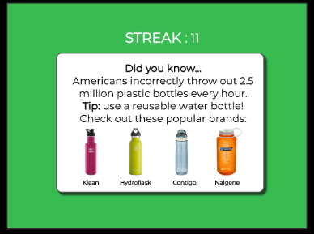

Wasteplacer features your standard three bins (compost, recycling, and trash), with a big twist. Each bin comes with a specialized scanner that can help to identify which receptacle waste belongs. If a bin recognizes that an item was incorrectly disposed of, it will display on the front of the bin the item that doesn't belong. This serves as both a reminder to change your habits the next time, or even having the person remove the improper item. A cluttered bin means you need to work on some of your habits, while a clean screen means you've gone green!
The screen is the most essential part of wasteplacer. The key functionality we've added is helping a person sort, using the camera (see The Camera section below). A person is able to scan their item, and throw away the item in the correct receptacle. Wasteplacer determines if your placement is correct, and gives you feedback. A streak of items that have been correctly disposed of in a row is displayed, as a motivating factor to continue proper sorting.

After an item is disposed, the screen will update the streak, as well as give you feedback on whether or not you were correct. Additionally, a tip or fun fact that relates to the item you disposed of is displayed, further encouraging you to help make greener choices!
Wasteplacer features your standard three bins (compost, recycling, and trash), with a big twist. Each bin comes with a specialized scanner that can help to identify which receptacle waste belongs. If a bin recognizes that an item was incorrectly disposed of, it will display on the front of the bin the item that doesn't belong. This serves as both a reminder to change your habits the next time, or even having the person remove the improper item. A cluttered bin means you need to work on some of your habits, while a clean screen means you've gone green!
Early on, we decided that we wanted to understand the impact that waste has on our world. We wanted to learn how people used and disposed of their waste, and try and understand why they did so.
After conducting our research, we came up with three primary designs, including two different smart bin designs and a smart phone application. We originally tried moving forward with the phone application, with a main focus of sorting waste.
After receiving lots of feedback from our users, we realized a phone application may have been too heavyweight. We pivoted to smart bins in order to make the process more efficient. We further refined our smart bins after several heuristic evaluations and usability tests.
After finalizing our prototype for our final product, wasteplacer, we were able to convert our paper prototype into a full digital mockup!

Sociology Undergrad
CSE Undergrad
CSE Undergrad
CSE Undergrad